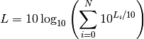

Speed of sound in air.
Energetic summation.

Angular frequency for one o more frequencies (as NumPy array).
Wavelength for one or more frequencies (as NumPy array).
Turbulence
Weighting
Enter search terms or a module, class or function name.